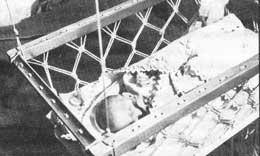

Before building this project, read the safety note in the comments section of this article. - MOTHER
Tired of awkwardly designed, overpriced nursery goods? "You don't have to put up with them," says Mark White of Kodiak, Alaska. And Mark should know. Because he (and wife Karen) designed and made the beautiful cradle you see here... at as cost of little more than a couple of dollars.
The months-long waiting period prior to the birth of our first child was a joyful time for us . . . and part of its magic lay in the many preparations we made for our baby's arrival. Among the first of those preparations was our construction of a macramed, hanging baby cradle.
We'd looked at some of the space-eating monstrosities offered by the makers of mass-produced cribs . . . and-sad to say-we found their wares entirely impractical. For what we wanted was a cradle that'd be [1] lightweight, [2] compact, and [3] collapsible for easy storage . . . and we certainly hadn't found these qualities in any of the items we'd seen.
Then too, we wanted our firstborn's bed to be soft and warm and comfortable, to give the child a feeling of security. Somehow, plywood headboards and prison-like bars didn't give us that feeling.
Our thinking on cradles was influenced by something else, too: We wanted our baby to sleep as close to our bed as possible, so Karen could-if need be-respond to the infant's cries by lifting him/her right into bed with us.
In the end, we decided to make our own cradle . . . a macramed, hanging cradle that we could suspend over the foot of our bed!
CRADLE COMPONENTS
As you can see from the accompanying illustration, our baby's hanging bed consists of three components: [1] an open, rectangular, wooden "upper frame", [2] a one-piece hardboard bottom, and [3] interwoven nylon twine sides.
The upper frame measures 20" X 28" (a bit on the small side, we've found) and consists of four pieces of scrap two-inch lumber joined together by five-inch-long No. 12 wood screws. Along the length of each framing member I drilled pairs of holes-1/4" in diameter and spaced 3/4" apart-every two inches, to accommodate the strands of twine. (Altogether, then, I made ten pairs of holes in each 28" framing member and six pairs along each 20" piece.) Naturally, for our child's safety I sanded each piece of wood carefully after drilling, to eliminate splinters.
The crib's bottom is nothing more than a 16" X 24" piece of 3/16"-thick Masonite. (Quarter-inch plywood should work just as well.) This piece is purposely smaller than the upper frame so that the macrame lacing will slope inward towards the bottom, thereby helping to hold the mattress in place and keeping the baby from rolling too far to one side or the other. (Note: Because of this board's smaller size, you'll have to space the pairs of twine holes around its perimeter somewhat closer together than two inches. I worked out the spacing with a pencil before I drilled . . . and it saved me a lot of headaches!) For the macrame lacing, we used 3/16" braided nylon netmending twine (pure nylon . . . no preservatives or tar compounds added), which cost us about $1.50 for the 224 feet we used. We chose this material for its combination of strength and softness . . . however, cotton twine-prewashed to remove the starch-or nylon sash cord would be equally suitable.
ASSEMBLY
Putting the cradle components together was a cinch. First we tied four long pieces of twine to the corners of the 20" X 28" frame, then we hung the frame from our plank ceiling with the aid of four strong screw hooks. (If your house or apartment has a plasterboard ceiling, make sure you screw those hooks into something solid-like the ceiling joists-so there's no chance they'll pull out. If in doubt, test the strength of the attachments by hanging a 20- to 30-pound weight from each hook . . . then proceed.)
Once the frame was in place, we set the crib bottom on a cardboard box so it'd rest about ten inches below the hanging "hoop". Next, we got out our roll of twine, snipped off 32 seven-foot-long pieces of nylon, and carefully seared-or melted-the lines' ends in a candle flame (to prevent raveling) . . . after which we folded the pieces of twine in half and dropped them one by one into the pairs of holes along the top of the rectangular frame. This done, we began tying the macrame knots (in this case, a pattern called a square knot sennit).
Just how fancy you get in your knot-tying depends more on how patient you are than on how much skill you have. (If you feel intimidated by this part of the project, though, you may want to consult a beginner's book on macrame . . . such as Dona Z. Meilack's Macrame: Creative Design in Knotting, available for $3.95 from MOTHER'S Bookshelf and other stores around the country.) The main thing to remember is that you want to keep the braided openings small enough so that a child's head can't possibly poke through one, yet large enough so the infant's hands and feet can't get caught. Take your time here and think things out . . . you'll be glad you did.
THE MATTRESS We used a two-inch-thick piece of foam rubber-covered with a double thickness of plastic-for the cradle's mattress. (The foam rubber cushion from an old car seat is about the right thickness and firmness.) Atop the mattress we laid a soft piece of cotton quilting to absorb moisture. (From the standpoint of both health and comfort, we don't think it's a good idea to let a baby lie directly on plastic.) And that's all there is to it! That's our "hanging cradle"!
TOGETHERNESS
Our daughter, Melissa, is two months old as I write this, and I'm happy to report that she seems to enjoy her little cradle almost as much as Karen and I enjoyed making it. In the, mornings-when the sun shines through the bedroom window-Melissa waves her arms in the air and smiles and grunts, causing the cradle to swing back and forth gently. And at night, our daughter rests comfortably knowing that her mother and father are always nearby.
There's nothing like love and attention to foster self-confidence and personality growth in a young child. And thanks to our homemade hanging cradle, our baby gets all the love and attention we can give her . . . 24 hours a day!
|
 |
|
|